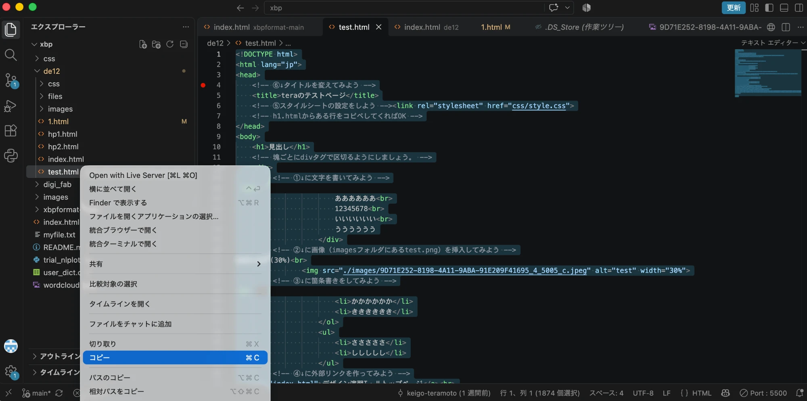
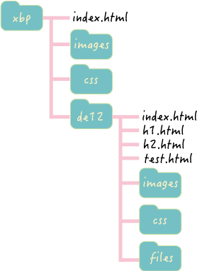
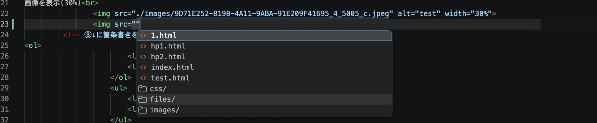
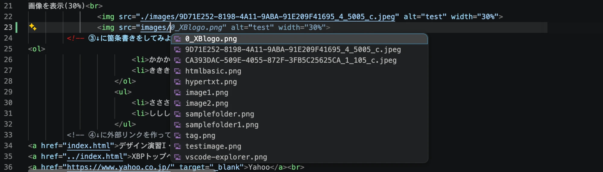
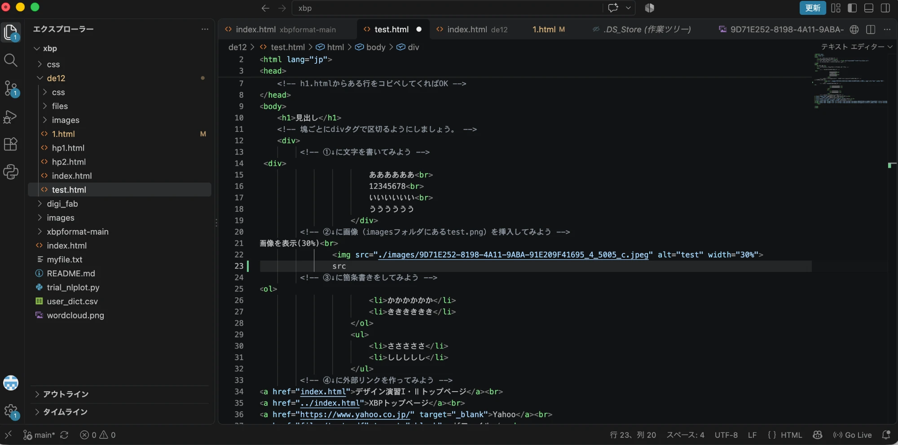
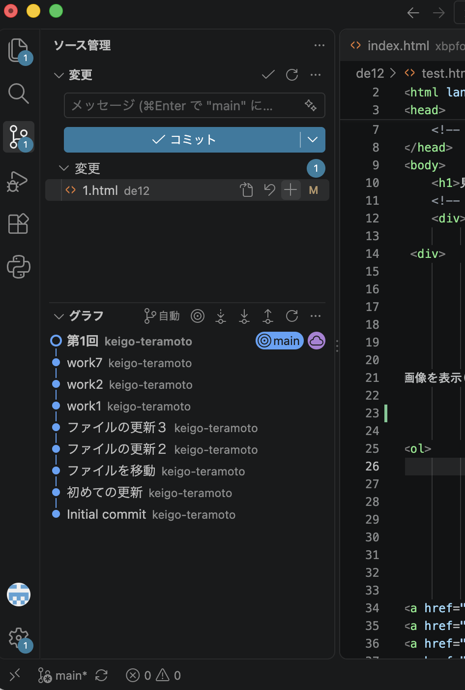
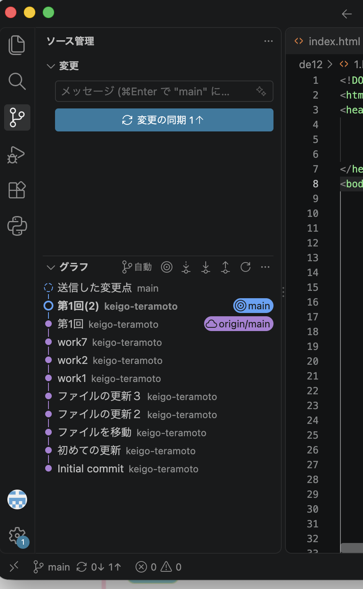

第1回
課題をホームページに載せるまでの流れ
- 新しいhtmlファイルを作る
- 中身を書く
- 画像を用意して入れる
- Live Serverで表示を確かめる
- index.htmlの一覧にリンクを足す
- add → commit → push でGitHubに送る
- 公開されたページを確かめる
1. 新しいhtmlファイルを作る
一番かんたんなのは、すでにあるファイルをコピーして名前を変える方法。
VSCodeの左側の一覧（エクスプローラー）で、de12フォルダの中の test.html を右クリックして、コピー → 貼り付けをする。
- 名前は 1.html、2.html のように半角の英数字にする（日本語だと不具合が出ることがある）
- 置く場所は de12フォルダの直下

2. 中身を書く
<body> と </body> の間に書いていく。
見出しをつけたい
<h1>見出し１</h1> 大見出し
<h2>見出し2</h2> 中見出し
<h3>見出し3</h3> 小見出し
数字が小さいほど大きな見出しになる。
ページ全体のタイトルにh1、大きな区切りにh2、その中の小区切りにh3、という使い分けがしやすい。
文章を書きたい
<div>
ああああああ<br>
12345678<br>
いいいいいい
</div>
- まとまりごとに div で囲む
- 改行したい場所に br を書く（ファイル上で改行しただけでは、画面では改行されない）
箇条書きにしたい
<ul>
<li>あああああ</li>
<li>いいいいいいい</li>
</ul>
番号をつけたいときは、ul を ol に変えるだけ。
<ol>
<li>ああああああ</li>
<li>いいいいいい</li>
</ol>
- ああああああ
- いいいいいい
リンクを貼りたい
書き方は、a の href に行き先を書いて、表示する文字を挟む。行き先によって、書き方が少し変わる。
<a href="./index.html">デザイン演習Ⅰ・Ⅱトップページ</a>
<a href="../index.html">XBPトップページ</a>
<a href="https://www.yahoo.co.jp/" target="_blank">Yahoo</a>
<a href="./files/test.pdf" target="_blank">pdfファイル</a>
target="_blank" をつけると新しいタブで開き、つけないと今のタブが切り替わる。
外部のサイトにリンクを貼るときは、自分のページではないことを書き添える。何も書かないと、自分が作ったページのように見えてしまう。
実際に表示するとこうなる。
YouTubeの動画を載せたい
動画ファイルは重すぎるので、GitHubには絶対にpushしない。YouTubeにアップロードして、埋め込みコードを貼る。
- YouTubeで動画の「共有」を押す
- 「埋め込む」を押す
- 出てきたコードをコピーする
- htmlの載せたい場所に貼り付ける
貼るコードは次のような形になる。
<iframe width="560" height="315" src="https://www.youtube.com/embed/QmtEP_GOFp0" title="YouTube video player" frameborder="0" allow="accelerometer; autoplay; clipboard-write; encrypted-media; gyroscope; picture-in-picture" allowfullscreen></iframe>
実際に表示するとこうなる。
3. 画像を入れる
手順
- 画像ファイルを de12/images フォルダに入れる（ファイル名は半角の英数字）
- htmlに img を書く
画像を表示(30%)<br>
<img src="./images/testimage.png" width="30%"><br>
画像を表示(40%)<br>
<img src="./images/testimage.png" width="40%"><br>
- src：画像ファイルの場所
- width：画像の幅。% で書くと、画面の幅に対する割合になる。
width の数字を変えると大きさが変わる。実際に表示するとこうなる。
画像を表示(30%)

画像を表示(40%)
写真を使うときの注意
スマホやカメラで撮った写真はサイズが大きすぎる。そのままpushすると表示が遅くなるので、1MB（1024KB）以下に小さくしてから images に入れる。
画像の場所の書き方
場所は、「今書いているhtmlファイルから見てどこにあるか」で書く。
./ は同じ階層、../ は1つ上の階層を表す。

- ./images/testimage.png：同じ階層（de12）の中のimagesフォルダの中のtestimage.png
- ../images：1つ上（xbp）の中のimagesフォルダ
VSCodeで ./ や ../ と打つと、フォルダやファイルの候補が出てくるので、そこから選ぶと打ち間違いが減る。


4. Live Serverで表示を確かめる
書いたものが、実際にどう見えるかをブラウザで確認する。VSCodeの拡張機能「Live Server」を使う。
- 確認したいhtmlファイルをVSCodeで開く
- 画面右下の「Go Live」を押す（または、ファイルを右クリックして「Open with Live Server」）
- ブラウザが開いて、ページが表示される
ファイルを保存すると、ブラウザの表示も自動で更新される。「書く → 保存 → 見る」を繰り返しながら進められる。

表示がおかしいときは、次の点を確認する。
- タグを閉じ忘れていないか（div を開いたら /div で閉じる）
- 画像やリンクの場所の書き方が合っているか
- ファイルを保存したか
head（ページの設定）の部分
test.htmlをコピーしたなら最初から入っているが、変えたい部分と意味はこの2つ。
<title>XBPのページ</title>
<link rel="stylesheet" href="./css/style.css">
- title：ブラウザのタブに表示される名前。自分のページに合った名前に変える。
- link：デザイン（背景や余白）を決めたcssファイルを読み込む。これが書けていると、見た目が整う。
この2行は head の中に書く。head は設定を書く部分、body は画面に表示するものを書く部分。
5. 一覧ページにリンクを足す
作ったページは、index.html からたどれるようにしておく。
de12/index.html を開いて、演習ノートの一覧の箇条書きに1行足す。
<h2>演習ノート一覧</h2>
<ul>
<li><a href="./1.html" target="_blank">第1回</a></li>
</ul>
index.html は、フォルダ名までしか書かなかったときに最初に表示されるページ（トップページ）。
そこからリンクをたどれば、ほかのページを見てもらえる。
6. GitHubに反映する（add → commit → push）
gitとGitHub
-
git：自分のパソコンの中で、ファイルの変更履歴を残していく道具。
上書きしても「あの時点のファイル」にいつでも戻れる。
-
GitHub：その履歴をネット上に置いておく場所。
ここに置いたhtmlファイルが、そのままホームページとして公開される。
つまり、パソコンで書いただけでは公開されない。GitHubに「送る」作業が必要になる。
3つの操作の意味
- add：今回の記録に入れるファイルを選ぶ。「これとこれは今回の分」と決める。
- commit：選んだファイルの今の状態を、メッセージをつけて記録する。セーブのようなもの。
- push：記録した内容を、GitHubに送る。
commitまでは、自分のパソコンの中だけの話。pushして初めて公開ページに反映される。
VSCodeでの操作
-
左端の縦のバーから「ソース管理」（枝分かれのアイコン）を開く。
変更したファイルの一覧が出る。
- 記録に入れたいファイルの右にある「＋」を押す（add）。全部入れたいときは、「変更」の横の「＋」。
- 上のメッセージ欄に、何をしたかを書いて「コミット」を押す（commit）。
- 「変更の同期」（または「Sync Changes」）を押す（push）。


メッセージは、あとで見て何をしたかがわかるように書く。「更新」より「第1回のページを追加」のほうが、あとから探しやすい。
※ 画像ファイルを新しく入れたときは、画像もaddしないと公開ページに出ない。
自分のパソコンでは見えるのに、公開ページだけ画像が出ないときは、画像をpushし忘れていることが多い。
7. 公開されたページを確かめる
- 公開されているURLをブラウザで開く
- 反映まで1〜数分かかることがあるので、変わっていなくても少し待つ
- それでも変わらないときは、ブラウザを再読み込みする
- 画像が表示されているか、リンクで正しいページに移動できるかを確認する
ページに載せてはいけないもの
ホームページは誰でも見られるので、次のものは載せない。
- 住所や学籍番号などの個人情報
- 本人の許可を得ていない、顔が写った写真や氏名
- 人を傷つける内容
他の人の文章や画像を使うときは、引用元を書く。
情報の公開は、神奈川大学の情報倫理に関するガイドラインに沿って行う。